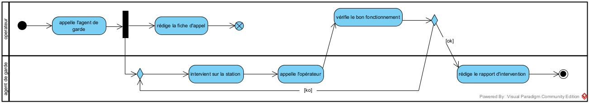
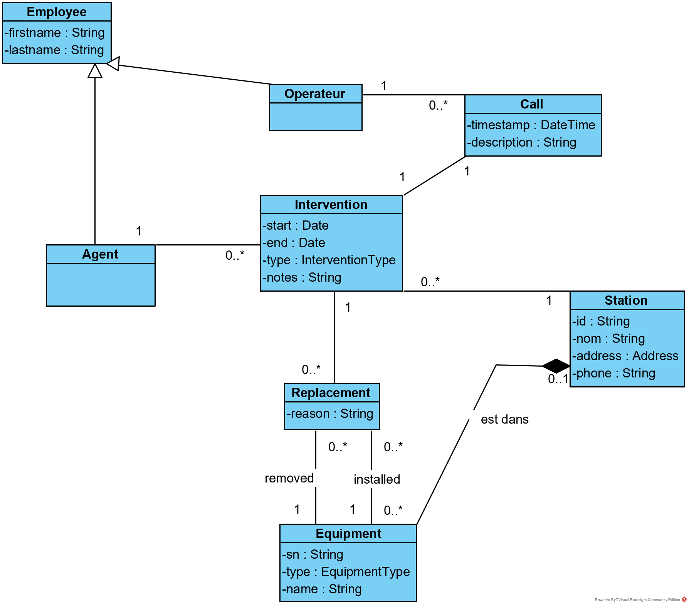
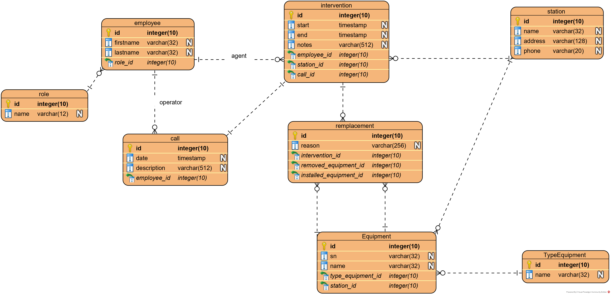
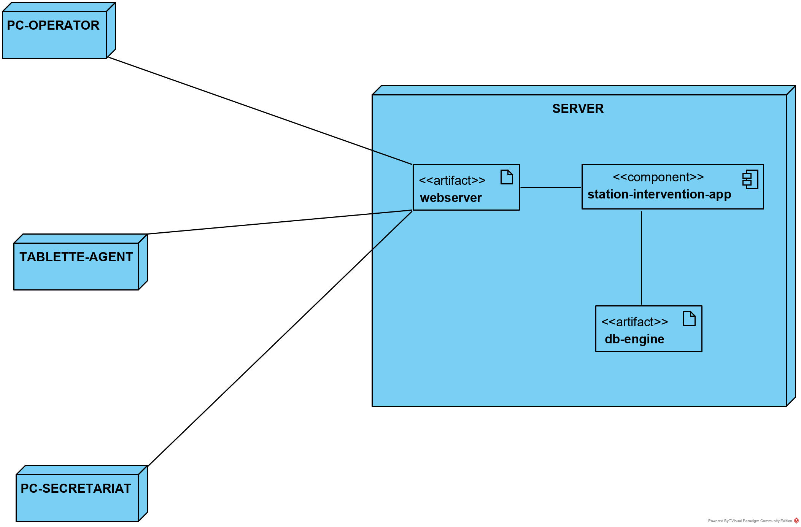

Objectifs de la leçon
- Comprendre les éléments principaux de l'analyse à l'aide d'un exemple
Durée estimée : 3h
Type d'enseignement : exercice, apprentissage personnel, support des autres étudiants et du professeur.
Enoncé
Une société de distribution de l'eau décide de digitaliser les rapports d'intervention sur sites, appelé stations d'eau.
Les stations d'eau sont les stations de l'infrastructure de distribution de l'eau. Nous avons des stations de captage et d'extraction, des stations de traitement, de pompage pour le transport et de stockage en hauteur, c'est-à-dire les châteaux d'eau et les réservoir.
Le projet visual paradigm réalisé pour ce projet est disponible ici, maintenance-stations-eau.vpp
Avertissement : il s'agit ici d'un document en construction.
Analyse fonctionnelle
Notre analyse fonctionnelle comportera deux vues, car nous n'avons pas de "business process model" puisqu'il n'y a pas de processus métiers.
- la vue "use case" qui liste les use cases;
- la vue "domaine" qui liste les entités du domaine et leur relation.
Business process
Une intervention sur une station d'eau suit le processus suivant
{kind=link}

Les intervenants sont
- opérateur est une personne du dispatching central qui surveillant l'ensemble du réseau de distribution d'eau
- agent de garde est le technicien qui effectue des interventions de garde (l'application ne s'occupe que des interventions imprévues)
Les étapes sont :
- l'opérateur appelle l'agent de garde
- l'opérateur rédige la fiche d'appelle
- l'agent de garde intervient sur la station (il fait l'intervention)
- il appelle l'opérateur pour signaler que l'intervention est terminée
- l'opérateur vérifie le bon fonctionnement de la station
- si le fonctionne n'est pas bon, le technicien recommence l'intervention
- si le fonctionne est bon, l'agent rédige le rapport d'intervention
Use cases
{kind=link}
Vue "classes du domaines"
{kind=link}

Analyse technique
Modèle DB
{kind=link}

Modèle de déploiement
{kind=link}
